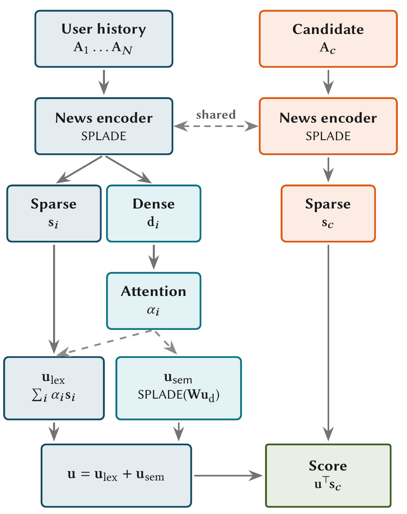

Encode each article separately, then learn how to combine a reader's interests. LSNR replaces a flattened history string with an explicit user encoder while retaining sparse, vocabulary-based retrieval. Its strongest diagnostic result comes from readers with just one history article: gains survive even when truncation is absent.
1. Motivation: a reading history is a collection
Concatenating news articles mixes distinct interests and forces a language model to infer which article matters. Long articles also exhaust the input window. STAR, the learned sparse baseline examined here, uses this concatenation approach.
Sparse representations assign weights to vocabulary terms, with most weights zero. They can use inverted indexes and can include learned expansion terms absent from the literal text. This makes them attractive for teams with established lexical retrieval infrastructure. The question is whether the user representation preserves enough information to make that infrastructure useful for recommendation.
LSNR separates article understanding from user aggregation. An article can be encoded once, independently of the reader. The user encoder then learns how to combine the articles that particular reader consumed.
2. Method: two paths into a sparse user vector
The shared article encoder produces a sparse vocabulary vector and an auxiliary dense vector. SPLADE-style projection, activation, and pooling form the sparse representation. The dense representation helps estimate the relevance of history articles to the overall user profile; candidate articles need only their cached sparse vectors at serving time.
A user-side transformer contextualizes the dense history vectors. Additive attention assigns a weight to each article. The model omits positional encodings because the authors' ablation finds no benefit from adding them on these news benchmarks.
The first user path takes an attention-weighted sum of article sparse vectors. Its active terms remain traceable to individual history articles. The second path pools dense interests and projects them back into vocabulary space, allowing aggregate interests to activate terms that no single article's expansion supplies. The paths share attention weights and the vocabulary projection rather than adding independent encoders.

Training separately regularizes document and user sparsity. At retrieval time, the default configuration retains the user's 30 highest-weight terms. Candidate scoring is a sparse inner product, so article encoding remains offline while online work consists mainly of aggregation, pruning, and retrieval.
3. Contribution: more than avoiding truncation
Independent article encoding removes the history-window bottleneck. Learned aggregation addresses a separate problem: how several reading interests should contribute to one profile. The single-history experiment helps distinguish those explanations.
With only one history article, STAR and LSNR receive the same content without history truncation. LSNR still improves. This supports the importance of its representation-learning and user-training design, rather than attributing every gain to access to more text.
The paper also separates ranking accuracy, index size, and latency. A compact index is useful, but compactness does not establish a speed advantage.
4. Evidence: stronger with short histories
The experiments use the small versions of English MIND and Danish EBNeRD. Because official test labels are unavailable, the authors evaluate on the official validation split and reserve part of training for tuning. These NDCG@10 results rank the candidates recorded in each impression, not the full article catalog.
| Method | MIND, full history | EBNeRD, full history | EBNeRD, one article |
|---|---|---|---|
| STAR | 0.3815 | 0.4704 | 0.4656 |
| NRMS | 0.4256 | 0.5290 | 0.4880 |
| NAML | 0.4247 | 0.5312 | 0.4889 |
| LSNR | 0.4234 | 0.5200 | 0.5022 |
LSNR improves MIND NDCG@10 by about 11% relative to STAR. Against dense recommenders, the conclusion is narrower: it is close to the strongest MIND models with full histories and trails them on EBNeRD. Its clear advantage is the short-history setting.

Ablations favor using both user paths. Learned attention also beats the tested pooling alternatives. These results support the aggregation mechanism rather than merely the choice of a sparse representation.
On EBNeRD, the reported index footprint falls from 31.84 MB for the dense baseline to 2.41 MB for LSNR. The dense baseline nevertheless has lower measured latency. The authors also identify a favorable dense-index recall–latency frontier, so footprint is the main efficiency advantage.

5. Limits: accuracy and retrieval use different scopes
The authors explicitly acknowledge that LSNR does not consistently beat strong dense models with full histories. Evidence is limited to two small news benchmarks and two languages. Community posts differ in length and interaction structure.
Accuracy is evaluated within impression candidate lists. Full-catalog retrieval is used for index and latency measurements, not the main accuracy tables. Those tables therefore do not establish full-catalog recall or an online CTR lift.
On MIND, initialization is not fully controlled: STAR starts from a retrieval-pretrained checkpoint while LSNR starts from ordinary BERT. This favors STAR directionally but remains a comparison limitation.
Vocabulary terms also require care as explanations. Inspectable dimensions do not guarantee that each expansion weight represents a reader's literal intent. The paper leaves direct evaluation of editable interest controls to future work.
6. Practical implications
An existing inverted-index platform could test LSNR as an additional personalized candidate source. Cache article representations offline and compare complementary recall against the dense source. For short community posts, interest aggregation may matter more than avoiding article truncation.
Evaluate by history length, including a one-article control. This distinguishes gains from improved user modeling from gains caused by retaining more text, and prevents active users from obscuring cold-history behavior in aggregate metrics.
Measure index storage, user-aggregation cost, and tail latency separately. Sweep user-vector pruning locally rather than assuming the paper's default is optimal. The useful trade-off depends on whether the platform needs smaller indexes, complementary candidates, or faster responses.
Source: https://arxiv.org/html/2610.23510v1 . Figures and experimental results come from the full paper; the implementation suggestions are editorial analysis.